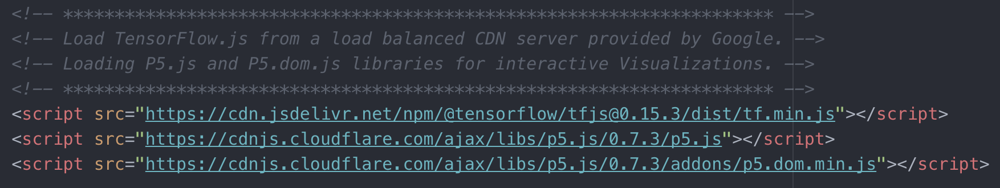
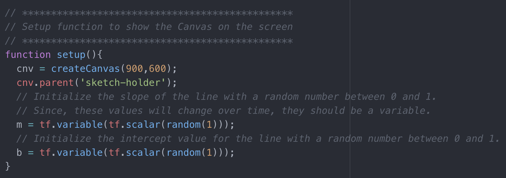
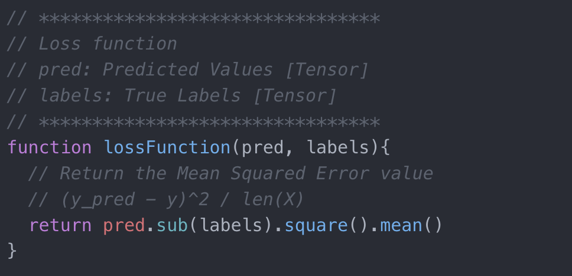
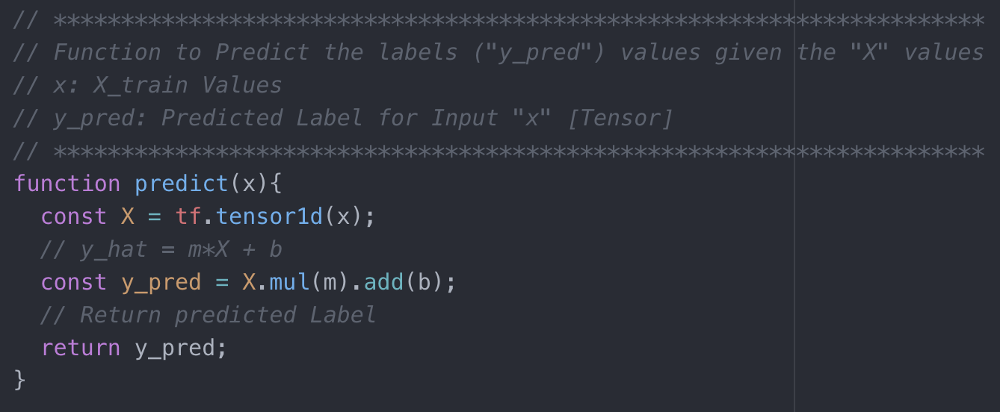
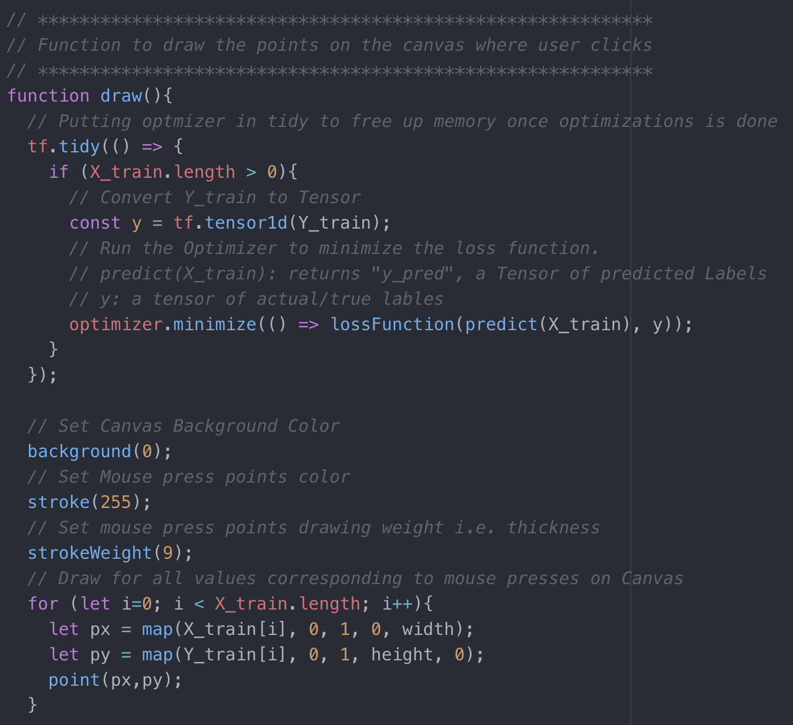
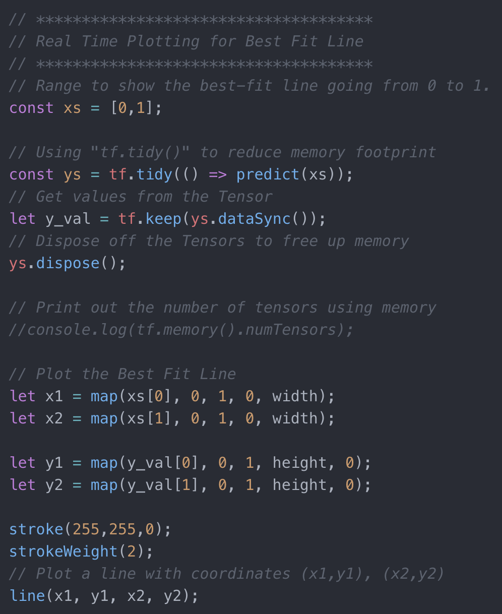

Hello Everyone !!
Thanks for continuing with this post.
In this tutorial, we'll see how to implement the simplest machine learning algorithm i.e. Linear Regression using TensorFlow.js.
Before moving forward, let's see what we are going to make today. If you see the canvas below, you see a random line plotted in yellow on a black canvas. Now go ahead and click around on the canvas.
X: , Y:
You see that as you click on the canvas, two things happen: 1. Some white dots appear on the canvas wherever you click and their corresponding X and y coordinates appear below that. 2. The yellow line moves around and tries to fit the points as you click around. This is exactly what Linear Regression aims to do i.e. get a Best Fit line to the data points.
The interesting part here is that this all is being done right here in your browser. Yes you hear it correct. Right here in your browser. As you click around on the screen the (x,y) values correspoinding to the coordinate position on the canvas are collected and used as inputs to train a simple linear regression model using TensorFlow.js right here in your browser. As the error starts reducing, the best-fit line moves from a random position to fit the data points.
Let's see how this is done in code.
The first step is to load the TensorFlow.js library for performing machine learning in the browser (thanks to Google) and we'll be using P5.js library for makig it easy to show the canvas and get our data points for training the model. This is done in code as follows:
Cool. Now that we have the libraries required, let's start by making our canvas which we'll then use to collect our training data. For this, we'll make use of inbuilt function in P5.js called "createCanvas(width, height, [renderer])". This function takes in the width and height of the canvas to be displayed as inputs. Once we do this, we have a canvas of given size. This is also a good time to initialize our variables that'll be trained over time. The equaltion for a line can be written as y = m * X + b. Here, m and b are the variables that we'll be training for. This all is done in code as follows:
Now that we have the canvas, let's define a function to get the (x,y) coordinate points for each mouse press on the canvas. These points will be used as our input data for training the Linear Regression model. For this again we'll make use of a buil-in function in P5.js called "mousePressed()". This function gets executed every time we press the mouse anywhere on the canvas. In this we map the mouseX and mouseY values to get the (x,y) values. Originally the values for the canvas axis are in range from (0, width) and (0, height). We map these values into the range of 0 to 1 in this code as well. All this is done in code as follows:

Before going further, let's define some helper functions. The first function is the Loss Function. For this problem of Linear Regression, we'll make use of Mean Squared Error. This function takes as input two values: predicted labels and the actual labels. This can be defined in code as follows:
Next, let's define our predict function. This is the function that executes the equation y = m * X + b and returns a predicted value for the label i.e. y_hat. This function is defined in code as follows:
We now have the canvas, the code to collect all coordinates correspoinding to mouse presses and the loss and predict functions. But we don't see the mouse presses on the canvas yet. Also, we don't see the best fit line yet. Let's do that now. Again making use of P5.js built-in function "draw()", which helps us to draw content on the canvas. We check for the length of the feature values array X_train and try to optimize for the loss on the go in the browser. This is the reason why the best-fit line in the demo above moves a little before setteling down as the model is still training in the browser and trying to minimize the loss and find the best values for m and b. This is done in code as follows:
Awesome. We now see our datapoints on the canvas for each mouse press. Something's still missing. Oh I know. The best-fit line. To draw that line we just get the predicted label values and plot the values on the canvas with x value going from 0 to 1 so as to fill the screen. This is done in code as follows:
And that's it. You now have linear regression using TensorFlow.js running in the browser.
Now that we have covered some of the basics of TensorFlow.js and how to use it to perform Linear Regression in the browser, now it's time to look at an even more interesting application, Image Classification.
Great work on completing this tutorial. Next, we'll see how to use a pre-trained machine leanring model for performing image classification using TensorFlow.js in the browser in real time.Image Classification using TensorFlow.js
For more projects and code, follow me on Github
Please feel free to leave any comments, suggestions, corrections if any, below.
comments powered by Disqus